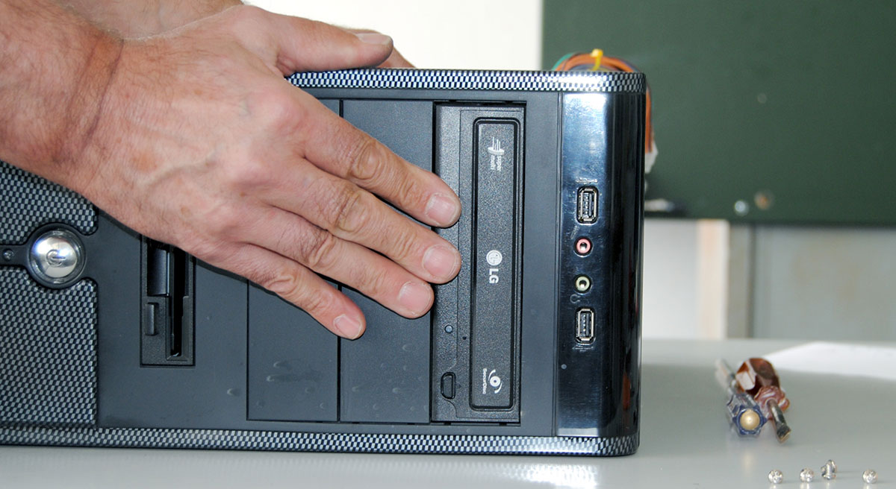
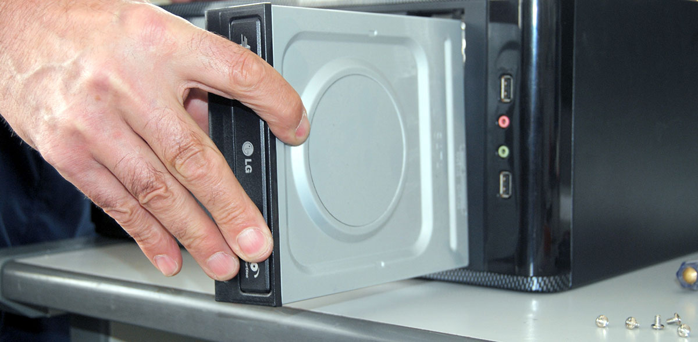
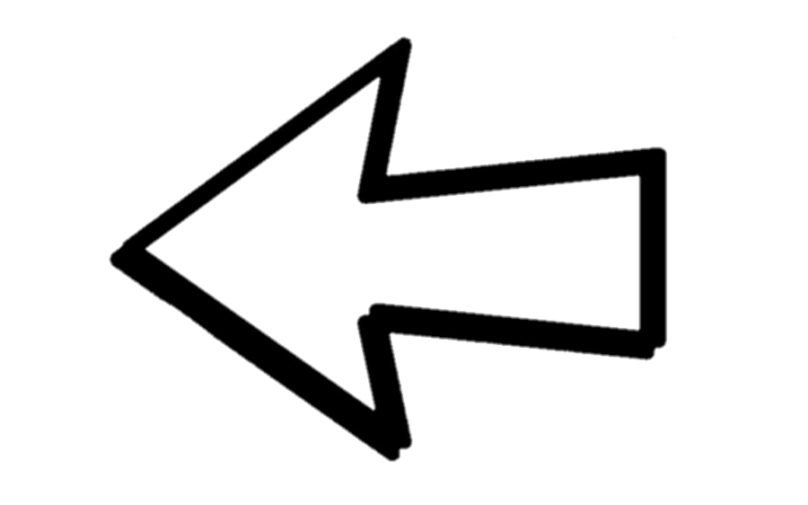
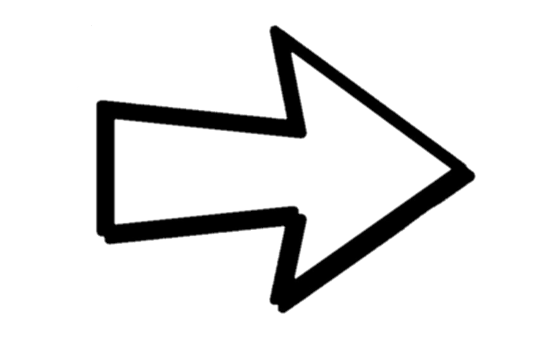

Passo 8
 Inserimento periferiche: dischi magnetici e ottici. Il disco ottico: inserimento.
Il disco magnetico (Hard Disk): inserimento e fissaggio.



Inserimento periferiche: dischi magnetici e ottici. Il disco ottico: inserimento.
Il disco magnetico (Hard Disk): inserimento e fissaggio.